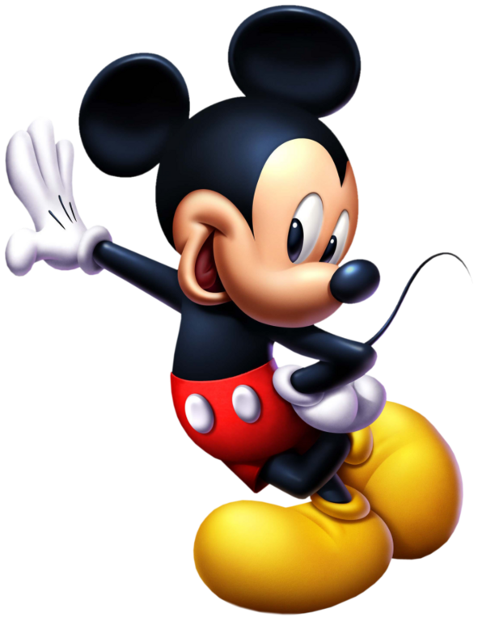

Mickey Mouse
Mickey Mouse (também conhecido como Rato Mickey ou apenas Mickey) é um personagem de desenho animado. Foi criado em 1928 por Walt Disney e o desenhista Ub Iwerks. Ícone e mascote de longa data da The Walt Disney Company, Mickey é um rato antropomórfico que normalmente usa shorts vermelhos, grandes sapatos amarelos e luvas brancas. Inspirado por personalidades do cinema mudo como Charlie Chaplin e Douglas Fairbanks, Mickey é tradicionalmente caracterizado como um oprimido simpático que sobrevive com coragem e inteligência diante de desafios maiores do que ele.
História
O personagem Mickey foi criado em 15 de maio de 1928, no curta animado mudo Plane Crazy. Todavia, antes que o trabalho pudesse ser finalizado, o som irrompeu nas telas do cinema. Desta forma, Mickey teve a sua estreia com o desenho sonoro intitulado "Steamboat Willie", que foi o primeiro desenho animado sonoro, apresentado no Colony Theatre em Manhattan, Nova Iorque, em 18 de novembro de 1928, para uma enorme plateia que aguardava ansiosamente pela primeira aparição de Mickey Mouse.
Voz e Dublagem
A dublagem de Mickey a partir de Steamboat Willie era desempenhada pelo próprio Walt Disney (entre 1928 e 1946). Depois de Walt Disney, foi James G. MacDonald que assumiu a vocalização do Mickey e em 1977, Wayne Allwine, um aprendiz de James G. MacDonald que foi a voz do Mickey até a sua morte em 2009. Atualmente, Mickey é dublado por Bret Iwan.
| Dublador | Período |
|---|---|
| Walt Disney | 1928 – 1946 |
| James G. MacDonald | 1947 – 1977 |
| Wayne Allwine | 1977 – 2009 |
| Bret Iwan | 2009 – presente |
Domínio Público
A primeira versão de Mickey Mouse estaria sob domínio público desde 2003 — a proteção dos direitos autorais nos Estados Unidos só dura setenta e cinco anos — não fosse a aprovação pelo Congresso Estadunidense da lei de prorrogação do copyright (que se tornou conhecida como "Lei Mickey"), que expandiu por vinte anos os direitos autorais de todas as obras americanas que não tivessem caído ainda em domínio público. Os desenhos animados do Mickey permaneceram protegidos por direitos autorais até 2024. No entanto, alguns estudiosos de direitos autorais argumentam que os direitos autorais da Disney sobre a versão mais antiga do personagem podem ter sido inválidos devido à ambigüidade no aviso de direitos autorais de Steamboat Willie.

Aparições Notáveis
Mickey Mouse esteve presente em diversas mídias ao longo das décadas:
- Curtas animados: Steamboat Willie (1928), The Band Concert (1935), Fantasia (1940)
- Séries de TV: Mickey Mouse Clubhouse, The Wonderful World of Mickey Mouse
- Parques temáticos: Disneyland, Walt Disney World, Tokyo Disneyland e outros parques Disney ao redor do mundo
- Videogames: Epic Mickey, Castle of Illusion
Curiosidades
- Mickey Mouse foi um dos primeiros personagens animados a ter som sincronizado.
- As luvas brancas de Mickey foram adotadas para facilitar a animação das mãos.
- Mickey tem uma estrela na Calçada da Fama de Hollywood.
- O nome original do personagem seria Mortimer Mouse, mas Lillian Disney, esposa de Walt, sugeriu Mickey.
- Em 2024, a versão original de Steamboat Willie entrou em domínio público nos EUA.
Personagens Relacionados
- Minnie Mouse
- Pato Donald
- Pateta
- Pluto
- Tio Patinhas
- Margarida